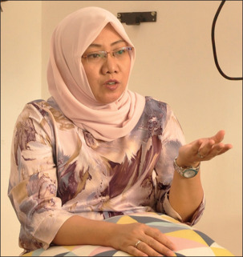
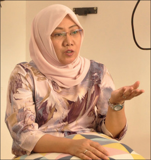
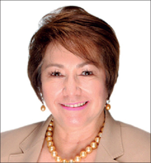
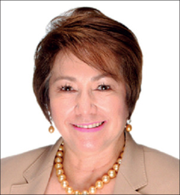

TRIBUTE TO DOCTORS

The global COVID-19 death toll stands at more than 1·3 million. Among the lives lost have been those of health-care workers, who have had crucial roles throughout the response and continue to serve at the front lines. At the outset of the pandemic, doctors warned of the potential implications of the virus. As the virus spread, many doctors provided treatment for a disease they little understood, while others contributed to accelerated research on potential treatments and vaccines. And as the COVID-19 pandemic worsened worldwide, health professionals worked tirelessly to provide care for patients—some even emerged from retirement to provide assistance.
It is not possible to honour all of the health workers who have died from COVID-19, but in telling the stories of a few of the health professionals from different specialties and various countries who lost their lives to the disease, these short obituaries serve as a tribute to the many other health workers who have died in the pandemic. These lives are also a reminder of the ongoing dedication and service of those who continue to care for patients at a time when COVID-19 cases and deaths are increasing in many countries.

Arpik Asratyan
Epidemiologist who specialised in viral hepatitis. She was born on June 25, 1950, in Armenia, and died on March 27, 2020, in Moscow, Russia, aged 69 years.
Arpik Asratyan joined the Department of Epidemiology and Modern Vaccination Technologies at what is now I M Sechenov First Moscow State Medical University at a crucial moment in 1997. An expert in viral hepatitis, her arrival coincided with “a period at the turn of the century when the problem of parenteral viral hepatitis was especially urgent both in Russia and in the world”, said her colleague Elena Gennadievna Simonova, a Professor in the Department of Epidemiology and Modern Vaccination Technologies. “Professor Asratyan was an extremely popular scientist and teacher who extensively trained scientific personnel. She was instrumental in the prevention of viral hepatitis”, said Simonova.
Sara Bravo Lopez
Primary care physician. She was born on June 20, 1991, in Ciudad Real, Spain, and died on March 29, 2020, in Alcazar de San Juan, Spain, aged 28 years.
There is a tradition at the Faculty of Medicine at the University of Valladolid in Spain that when medical students reach the end of their studies they celebrate a last dinner with their professors. Although she had a leg injury as her class's event approached in 2015, Sara Bravo Lopez was determined to take part in the celebration. “She kept dancing all night, happy, because we were finally doctors”, said her classmate Luis Cabezudo Molleda, an internal medicine resident at the Complejo Asistencial Universitario de Palencia.

Claudia Nogueira Cardoso
Endocrinologist. She was born on Oct 12, 1963, in Rio de Janeiro, Brazil, and died on April 8, 2020, in Rio de Janeiro, aged 56 years.
Claudia Nogueira Cardoso always made sure to keep extra medical supplies in her car or her bag. As she travelled around Rio de Janeiro, Brazil, where she lived, she offered help to people in the community. “She was very charitable, a friend and companion who always had a friendly word”, her brother Claumyr Cardoso said. “She must be remembered as a person who liked to help everyone.”Cardoso decided to be a doctor at a young age, her brother remembered, inspired by her own paediatrician. She earned her medical degree at the Souza Marques School of Medicine in Rio de Janeiro before specialising in endocrinology at Santa Casa da Misericórdia, a local hospital.
Livia Carrion
Former Director of Epidemiology of the Institute of Public Health, Bolivar state, Venezuela. She was born on Sept 9, 1953, in Puerto de Hierro, Venezuela, and died on July 25, 2020, in Ciudad Bolivar, Venezuela, aged 66 years.
Livia Carrion studied medicine at the Universidad de Oriente in Ciudad Bolivar, Venezuela, a school with the motto, “From the town we come and to the town we go”. She would go on to dedicate her career to providing medical services to neglected communities, often in far-flung locations. “Her sublime love and dedication to medicine and to helping the needy encouraged her to study and to work for 35 years in public health, never practising private medicine”, said her daughter Katherine Sulbaran.

Nino Antonio Cassanello Layana
Internal medicine specialist. He was born on Jan 12, 1945, in Guayaquil, Ecuador, and died there on March 26, 2020, aged 75 years.
Nino Cassanello Layana taught his medical students what he called the “principle of responsibility”. He believed that students needed to get to know their patients on a personal level and he encouraged them to ask about “not just the medical problems, but what kind of job he does, where he lived, what about his family”, said Cristobal Sanchez Metz, an adult hospitalist specialising in internal medicine in Washington, USA, who studied under Cassanello for 3 years. “Teaching was in his blood and he knew how to transmit knowledge to countless generations of doctors who passed through his classrooms”, said Tomas Alarcon Aviles, a former student, who is now the head of neurology at Hospital Luis Vernaza in Guayaquil.
Adil El Tayar
Surgeon and organ transplant specialist. He was born on March 10, 1956, in Atbara, Sudan, and died on March 25, 2020, in London, UK, aged 64 years.
As a young doctor working in Sudan, Adil El Tayar became aware of the rising problem of kidney diseases, particularly among young people. Without access to transplant surgery, patients were dependent on regular dialysis, which disrupted their ability to work or study. His mission was to replace the country's largely privatised, fragmented transplant services with a centralised registry and practice. “He wanted to build this service that could breed excellence, whether in diagnostics or on the operative or medical sides”, said his cousin, Hisham El-Khidir, a surgeon working at the Norfolk and Norwich University Hospital in the UK.

Mustafa Kamal
Surgeon and Vice Chancellor of Nishtar Medical University in Pakistan. He was born on Sept 15, 1959, in Multan, Pakistan, and died there on July 15, 2020, aged 60 years.
Mustafa Kamal was in the midst of transforming Nishtar Medical University when he died of COVID-19. Named the first Vice-Chancellor when the university was elevated from a college in 2017, he was working to introduce new programmes at the institution and overseeing the construction of a new 500-bed hospital. “He was very enthusiastic to really improve the medical education and health care in that part of the world”, said Ghulam Qadir, a graduate of Nishtar and now an addiction psychiatry specialist, who is the CEO of Apex Behavioral Health in Dearborn, MI, USA. Qadir started working with Kamal a year ago to improve the psychiatric training at the university. “You would never find another person like him. If he promised something, he delivered.”

Richard Kisser
Consultant surgeon. He was born on Oct 26, 1962, in Tema, Ghana, and died on July 2, 2020, in Accra, Ghana, aged 57 years.
As a consultant surgeon at The Trust Hospital in Accra, Ghana, Richard Kisser's colleagues knew they could call him any time for assistance or a consultation, even after he had left work for the day. He was always willing to turn around and come back, said Nii Lante Okunka Blankson, a specialist physician at the hospital. “He never shied away from hard work. He volunteered to do so many procedures.”Kisser cultivated that work ethic from a young age, Blankson said. The two attended the University of Ghana Medical School in Accra together, where Kisser had a reputation as a quiet, serious student.

Jitendra Nath Pande
Pulmonologist and former head of the Department of Medicine at the All India Institute of Medical Science. Born on June 14, 1941, in Shikohabad, India, he died on May 23, 2020, in New Delhi, India, aged 78 years.
Although he was a legendary pulmonologist, called upon to treat presidents and Bollywood stars, Jitendra Nath Pande made time for everyone. His office door was open to colleagues, students, and, especially, patients. “He gave a lot of time to patients”, said Abhishek Bhartia, the Director of the Sitaram Bhartia Institute of Science and Research in New Delhi, India, where Pande worked later in his career. “He was meticulous and he would never rush patients.” Instead, Pande used to frequently remind his students that patients were their best teachers.Pande was thorough in all aspects of his work.

Raffaele Pempinello
Expert in infectious diseases. He was born on May 7, 1944, in Naples, Italy, and died there on April 29, 2020, aged 75 years.
As the COVID-19 pandemic battered Italy's health system in March and April, doctors around the country came out of retirement to assist. Raffaele Pempinello was no exception. When a friend of his fell ill with COVID-19, Pempinello, an infectious disease specialist who had retired in 2013, offered to help, telling his wife that a doctor could never refuse to treat a patient. A week later, Pempinello tested positive for COVID-19 and died several weeks later. “He was always prone to help people”, said Roberto Monarca, past President and current Scientific Director of Health Without Barriers, a network of European organisations and experts advocating for healthy prison environments, who worked with Pempinello on a prison health project for the Italian Society of Infectious and Tropical Diseases.
This Picture contains large number of doctors who died due to CORONA treating and helping covid patients
A majority were from Bihar and Delhi, as per the IMA, which has maintained a state-wise registry of doctors who died of Covid-19 second wave.
A 28-year-old resident doctor from Maharashtra. A 34-year-old postgraduate resident doctor from Karnataka, five months pregnant. An 80-year-old medical practitioner from Bihar. A 96-year-old radiologist from Telangana. These are some among 800 doctor deaths that the Indian Medical Association (IMA) has counted in the second wave of Covid-19 this year. A majority were from Bihar and Delhi, as per the IMA, which has maintained a state-wise registry of doctors who died of Covid-19. Analysis is underway to assess how many were fully vaccinated or had received one jab. Preliminary findings, however, show few among them had received full vaccination. A majority also had to receive their first vaccine dose. To date, the IMA data shows that more than 1,500 doctors have died of Covid-19. The IMA has declared ‘Save the Saviours’ as the theme of this year’s National Doctors’ Day, which is observed on July 1.Dr Jayesh Lele, secretary general of IMA headquarters, told The Indian Express that studies were underway and information was being collected from each state regarding the number of doctors who had succumbed and the number of doctors who had been administered either one or both doses. “So far, we have the data of 800 doctors in our registry and initial observations indicate that a majority were yet to be fully vaccinated. Not many had got the first dose of the Covid-19 vaccine,” Dr Lele said, adding that they were also looking at data where young doctors had succumbed to Covid-19 and, among primary reasons, could be exposure to high viral load in ICUs or CCUs. He, however, said the analysis was underway.According to the state-wise list of doctors who died in the IMA Covid registry, 128 medicos were from Delhi, 115 from Bihar and 79 from Uttar Pradesh, who succumbed to the infection. West Bengal reported 62 deaths of doctors followed by 51 in Tamil Nadu, 44 in Rajasthan, 42 in Andhra Pradesh, 39 each in Gujarat and Jharkhand, 37 in Telangana, 36 in Odisha, 24 in Kerala and 23 in Maharashtra. Haryana reported 19 deaths while Assam reported 10. Last year, the toll among this high-risk group was 754. Then, the highest numbers were from Tamil Nadu and West Bengal. According to Dr Rohan Krishnan, national vice-president of Federation of All India Medical Association (FAIMA), there was no data on how many doctors had died after being administered one dose of the vaccine. “However, according to available information, it is likely that few would have succumbed after both doses of vaccination. There were, however, several doctors who did get infected after the dose but 99 per cent recovered,” he said.A Video of Indian Doctors Died due to the Second wave of Covid-19:
Other Doctors who also died during Covid-19 second wave:


 

 
